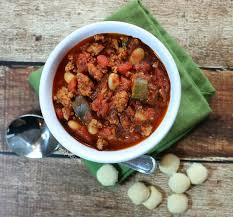

Turkey Chili

Hearty and meaty with tons of flavor and the perfect amount of
kick, you'll soon see why this is the BEST turkey chili!.
Ingredients
- 2 tablespoons olive oil
- 3 medium onions, diced
- 1 medium zucchini, diced
- 3 garlic cloves, minced
- 2 pounds uncooked 99% lean ground turkey breast
- 2 (28 oz) cans diced tomatoes
- 1 (14 oz) can Italian stewed whole tomatoes, roughly chopped
- 1 (6 oz) can tomato paste
- 2 (15 oz) cans cannellini beans, drained and rinsed (could also
use kidney beans)
- 5 tablespoons chili powder
- 1 tablespoon cumin
- 1 teaspoon cayenne pepper
- 3 tablespoons chopped cilantro
Steps
- Bring oil over medium heat in a large soup pot. Add the onion,
zucchini and garlic and saute for about 5 minutes until softened.
Add the ground turkey and continue to cook for another 6-7 minutes,
stirring to cook evenly and breaking up the meat until the meat is
cooked through.
- Add the tomatoes, tomato paste, beans, chili powder, cumin, cayenne,
salt and cilantro and stir to combine. Reduce the heat and simmer
uncovered for about an hour to thicken.